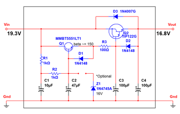
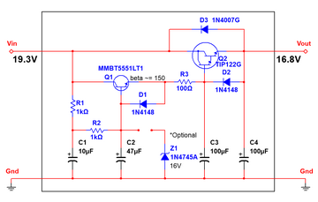
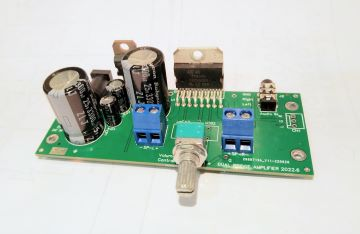

High Current Ripple Filter (unfinished)
A ripple filter for power amplifiers. 📐
project. i like to build high quality audio amplifier.
A ripple filter for power amplifiers. 📐
A mini, powerful, stable, low noise, dual bridge power amp with high current ripple filter. 📐
Choosing and Using Bypass Capacitors. 📐
Capacitor internal resistance curves under different capacitance